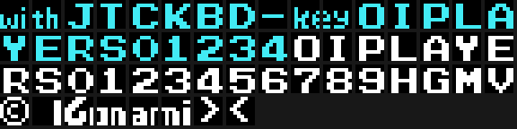

The first eighteen bytes are the header the BIOS reads:
4000 41 42 "AB", a cartridge signature
4002 03 42 INIT = 0x4203
4004 00 00 00 00 00 00 STATEMENT, DEVICE and TEXT set to zero
400A 00 x8 paddingWith the header at 0x4000 the BIOS maps the cartridge into page 1 (0x4000-0x7FFF) and jumps to INIT once it has finished booting. INIT writes jp 0x4037 into the H.KEYI hook (0xFD9A), clears the RAM from 0xE000 to 0xE7FE and leaves the stack right behind it, at 0xE7FF. From there the work is split: the main program runs the game —scoreboard, lives, change of era— and the interrupt moves everything you can see.
With 0xE000-0xE7FF of RAM, a 16 KB MSX is enough.
SCREEN 2, with the eight registers at 0x4D05:
| register | value | what it says |
|---|---|---|
| R0 | 0x02 | graphic mode 2 |
| R1 | 0xE2 | 16 K, screen and interrupt on, 16 × 16 sprites |
| R2 | 0x0E | name table at 0x3800 |
| R3 | 0x7F | colour table at 0x0000 |
| R4 | 0x07 | pattern table at 0x2000 |
| R5 | 0x76 | sprite attributes at 0x3B00 |
| R6 | 0x03 | sprite patterns at 0x1800 |
| R7 | 0xE1 | ink 14 on background 1 |
In SCREEN 2 the screen is split into three thirds of eight rows, and each third has its own 256 patterns and its own colours. Time Pilot loads all three the same: it uploads the first and then copies it twice with COPIA_VRAM_A_VRAM (0x4C97), which reads and writes byte by byte with a 0x800 step. Since the second third is already written when it gets there, the copy propagates to the third one on its own.
The play area is the first 24 columns and 24 rows; the scoreboard goes in the top row and from column 24 on.

Characters are uploaded with a list of blocks (0x4BF8): two bytes with the VRAM address, one with how many are coming and the data behind. The title and the menu are written with characters 0xC3 on, and the game font —the letters and the digits— with 0xDC on.
The odd part is that they are the same bytes: 0x798B is uploaded twice, once as the end of the menu block and once as the start of the font (0x427A), and the same happens with the digits at 0x79D3 (0x45E9). In SCREEN 2 colour goes per character, so having the same drawing under two numbers is what allows the same alphabet in two colours without taking up twice the room.
The first sixteen characters are not letters: the first eight are the eight drawings of the player's shot, the ninth is the little ship the lives are painted with (0x6A85), and then come the mark for an enemy still to go —different in each era (0x6AD0)— and the cell underneath the plane (0x6AF0).
The attribute table is 32 sprites, and the working copy lives in RAM (0xE380): the interrupt uploads it whole to VRAM on every frame (0x40CA). At the start of each era, seven groups of three bytes (how many, pattern, colour) hand out the 21 sprites needed —the plane, the enemies, the shots and the labels (0x4DEB)— and park them all off screen, at Y = 0xD1.
The plane is the only one that changes drawing: its sixteen patterns are at 0x6F2B and only the one in use goes up to VRAM.
Three channels of eight bytes at 0xE020, 0xE028 and 0xE030, and a player (0x4160) that gives each of them one step per frame. A sound program is a string of three-byte notes: the fine period, the coarse period with the volume in the top nibble and bit 3 for noise, and the duration. With bit 7 of the duration set, the note fades out on its own, step by step. An 0xFF ends the program.
A channel is quiet when the high byte of its pointer is zero, and to shut it up at once it is enough to point it at an 0xFF: that is exactly what 0x5C8F does with the one that closes the program at 0x7E40.
| address | what it holds |
|---|---|
| 0xE000/0xE001 | game mode and which player is playing |
| 0xE002/0xE003 | each player's lives |
| 0xE005/0xE006 | next extra-life step |
| 0xE00B-0xE013 | both players' scores and the record, in BCD |
| 0xE018 | the wait: the interrupt counts it down once every 32 frames |
| 0xE019 | the frame counter everything hangs off |
| 0xE01F | the phase of the interrupt's cycle (0-5) |
| 0xE020-0xE037 | the three sound channels |
| 0xE120/0xE122 | enemies still to shoot down, per player |
| 0xE121/0xE123 | how many are on screen right now |
| 0xE126/0xE127 | how many have come out since the life started |
| 0xE130-0xE134 | when the next group comes out, and where from |
| 0xE145/0xE146 | the plane's state and the direction it flies in (0-15) |
| 0xE180-0xE183 | each player's era and round |
| 0xE200-0xE20F | the end-of-era big machine |
| 0xE210-0xE22F | the nine clouds |
| 0xE230-0xE24F | the eight shots, four bytes each |
| 0xE260-0xE29F | the era 1 bombs and the enemy shots |
| 0xE2A0-0xE2CF | the missiles and the passenger |
| 0xE2D0-0xE2FF | the seven enemy slots, sixteen bytes each |
| 0xE380-0xE3FF | the RAM copy of the sprite table |
| 0xE400-0xE4A0 | the workshop where characters are shifted |
The player's plane is not on this list, and that is not an oversight: it has no slot because it does not move. It is nailed at Y = 0x5C, X = 0x54 (0x5408); what moves is everything else.
| bytes | ||
|---|---|---|
| code | 8911 | 54.4% |
| data | 7473 | 45.6% |
| unidentified | 0 |
The data, from the inside:
| bytes | ||
|---|---|---|
| the seventeen sound programs | 1,179 | they take up almost all the end of the cartridge |
| the big machine of the five eras | 1,113 | its drawings, the character map and the smoke |
| each era's own characters | 926 | the sprite patterns of its enemies |
| the title, the menu and the font | 753 | |
| the common sprite patterns | 617 | the ones that work for every era |
| the sixteen drawings of the plane | 512 | 32 bytes each |
| the clouds | 542 | the drawings, their shifted copies and the tables |
| tables and label lists | 1,605 | the years, the collisions, the directions, the dispatches |
| padding at the end | 226 | 0xFF from 0x7F1E to the last byte |
That padding at the end has its point: it is exactly where other Konami cartridges hide their mark —the catalogue number and the title in katakana—, a detail documented by Manuel Pazos. Time Pilot does not carry it: from 0x7F1E to 0x7FFF there is nothing but 0xFF.